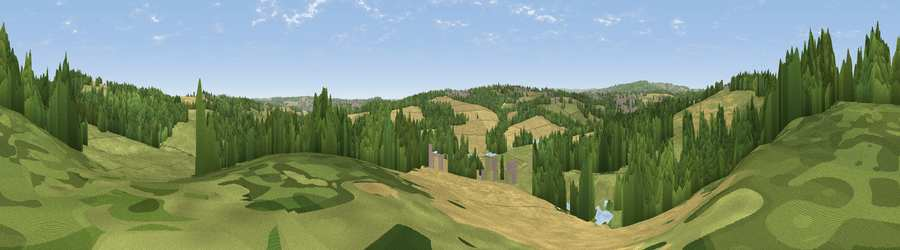

Viewpoint near Wentworth
#35711 in England · top 76% of its area beats it · near Wentworth · path 161 mWhere it is
The exact computed spot (SK 39925 97175). Click the marker for map links.
Public access: the nearest public right of way is about 161 m away — the final stretch may cross private land. Computed from Natural England's CRoW access layer and OpenStreetMap rights of way — not the legal definitive map. Always verify locally.
The view, rendered

A 360° render of this exact spot computed from the terrain model, tree cover and land cover — summer colours, afternoon light, calibrated against photographs of famous viewpoints. Real trees, hedges and buildings will differ in detail.
The panorama
Grey silhouette: terrain skyline in each direction (720 bearings, Earth curvature and refraction included). Dashed green: skyline with trees (+15 m) and buildings (+8 m) as obstacles. Blue strip: how far the ground is visible on each bearing.
Where the view opens
Wedge length = distance to the farthest visible ground on that bearing (vegetation-aware). Rings at 10, 25 and 50 km.
What fills the view
39% grassland · 32% woodland · 24% cropland · 3% water · 3% built-up
Angular shares of the visible panorama (visual magnitude), not map area. Landscape diversity 0.56 (0–1 Shannon).
Key numbers
More beautiful places nearby
The staircase of upgrades: each row has a higher view potential than everything closer. Driving times are estimates from straight-line distance, calibrated against real road routing — check an actual route before setting out.
| Place | Direction | Drive | Score |
|---|---|---|---|
| Hoober Stand | NNE · 2 km | ~4 min | 50.9 |
| Viewpoint near Upper Haugh | NE · 2 km | ~5 min | 56.8 |
| Viewpoint near Wentworth | NNW · 2 km | ~5 min | 61.2 |
| Hoyland Lowe | NW · 5 km | ~11 min | 64.5 |
| Viewpoint near Whitley | W · 8 km | ~16 min | 72.1 |
| Viewpoint near Wharncliffe Side | W · 9 km | ~17 min | 75.2 |
| Viewpoint near Greenfield | W · 40 km | ~59 min | 76.0 |
| Viewpoint near Carrbrook | W · 41 km | ~60 min | 77.1 |
53.46980, -1.40002 · source: screening · position refined by local search. Computed location — check access rights before visiting.